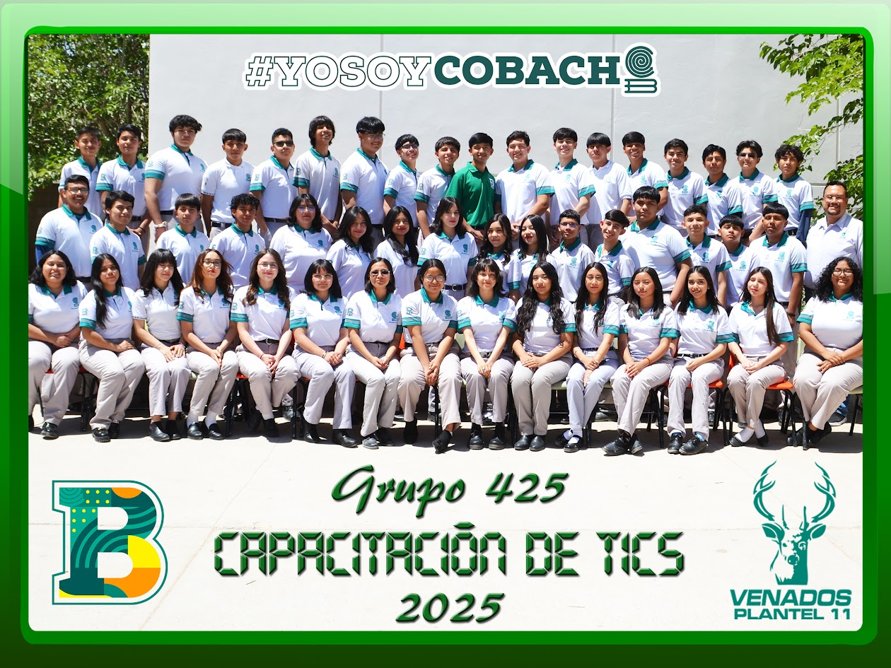

En tercer semestre aprendimos y vimos sobre las materias de: |
| Aplicaciones Informaticas: usamos app inventor y recuerdo mucho cuando hicimos n pikachu!! |
| Documentos Digitales: aprendimos de excel y sus celdas, y como mejorar nuestro desempeño en word. |
En cuarto semestre vimos: |
| Comunidades Virtuales: Temas sobre redes sociales, influencers e hicimos una expocicion sobre influencers. |
Mantenimiento y Redes de Computo: Vimos las partes esenciales de las computadoras, tanto software como hardware. |
En quinto semestre vimos sobre: |
| Sistemas de informacion: bases de datos, diagramas de entidad-relacion, entre mas cosas. |
| Programacion: empezaos con los modulos de academy, y vimos y usamos el lenguaje de programacion de cc+ |
Y por ultimo, en sexto semestre vimos sobre: |
| Diseño Digital: aprendimos a modificar, mezclar y mas cosas en photoshop, y trabajamos a hacer imagenes en illustrator. |
Paginas Web: al incio hicimos aginas web con codigo de html desde cero, despues aprendimos a usar dreamweaver y a como subir una pagina a internet. |

PRIMER AÑO DE TICS
SEGUNDO AÑO EN TICS